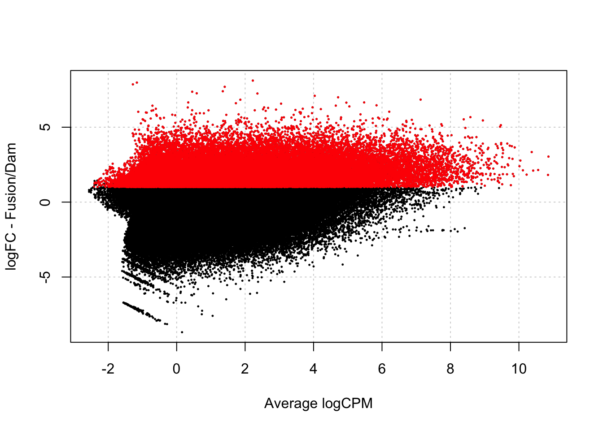
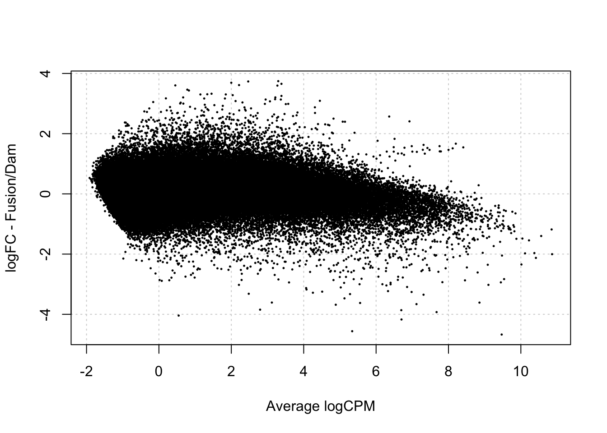
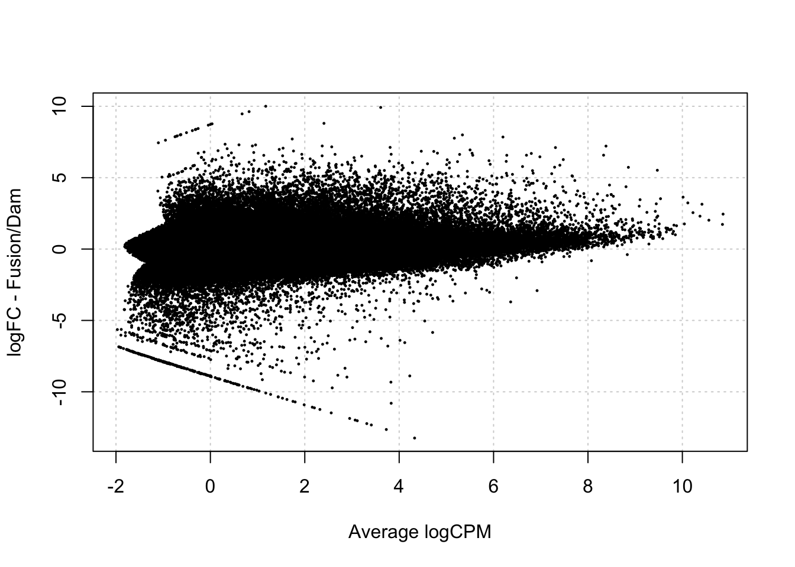

Last updated: 2024-10-08
Checks: 7 0
Knit directory: damsel_paper/analysis/
This reproducible R Markdown analysis was created with workflowr (version 1.7.1). The Checks tab describes the reproducibility checks that were applied when the results were created. The Past versions tab lists the development history.
Great! Since the R Markdown file has been committed to the Git repository, you know the exact version of the code that produced these results.
Great job! The global environment was empty. Objects defined in the global environment can affect the analysis in your R Markdown file in unknown ways. For reproduciblity it’s best to always run the code in an empty environment.
The command set.seed(20240816) was run prior to running
the code in the R Markdown file. Setting a seed ensures that any results
that rely on randomness, e.g. subsampling or permutations, are
reproducible.
Great job! Recording the operating system, R version, and package versions is critical for reproducibility.
Nice! There were no cached chunks for this analysis, so you can be confident that you successfully produced the results during this run.
Great job! Using relative paths to the files within your workflowr project makes it easier to run your code on other machines.
Great! You are using Git for version control. Tracking code development and connecting the code version to the results is critical for reproducibility.
The results in this page were generated with repository version 0ee498e. See the Past versions tab to see a history of the changes made to the R Markdown and HTML files.
Note that you need to be careful to ensure that all relevant files for
the analysis have been committed to Git prior to generating the results
(you can use wflow_publish or
wflow_git_commit). workflowr only checks the R Markdown
file, but you know if there are other scripts or data files that it
depends on. Below is the status of the Git repository when the results
were generated:
Ignored files:
Ignored: .DS_Store
Ignored: .Rhistory
Ignored: .Rproj.user/
Ignored: data/.DS_Store
Ignored: renv/library/
Ignored: renv/staging/
Untracked files:
Untracked: code/helper-vissers.R
Untracked: data/damsel_counts.rds
Untracked: data/damsel_counts_a.rds
Untracked: data/damsel_counts_b.rds
Untracked: data/sd_1_SRR794884-vs-Dam.kde-norm.gatc-FDR0.01.peaks.gff
Untracked: data/sd_2_SRR7948877-vs-Dam.kde-norm.gatc-FDR0.01.peaks.gff
Untracked: data/txdb_genes.rds
Untracked: output/damsel_dm.rds
Untracked: output/damsel_genes.rds
Untracked: output/damsel_peaks.rds
Untracked: output/fp_vissers_peaks.txt
Untracked: output/keep
Untracked: output/lrt_sd.txt
Untracked: output/marshall_peaks.rds
Untracked: output/peaks.txt
Untracked: output/vissers_dm.rds
Untracked: output/vissers_peaks.rds
Untracked: output/vissers_peaks.txt
Untracked: output/vissers_peaks_mod.rds
Untracked: outputvenn_plot.png
Untracked: renv/.gitignore
Unstaged changes:
Modified: code/run-Damsel.R
Modified: code/run-Vissers.R
Modified: renv.lock
Note that any generated files, e.g. HTML, png, CSS, etc., are not included in this status report because it is ok for generated content to have uncommitted changes.
These are the previous versions of the repository in which changes were
made to the R Markdown (analysis/fp-test.Rmd) and HTML
(docs/fp-test.html) files. If you’ve configured a remote
Git repository (see ?wflow_git_remote), click on the
hyperlinks in the table below to view the files as they were in that
past version.
| File | Version | Author | Date | Message |
|---|---|---|---|---|
| Rmd | 0ee498e | caitlinpage | 2024-10-08 | wflow_publish("analysis/fp-test.Rmd") |
| html | b6852e1 | caitlinpage | 2024-10-07 | Build site. |
| Rmd | 1f7aa8c | caitlinpage | 2024-10-07 | wflow_publish(c("analysis/run-Damsel.Rmd", "analysis/run-Vissers.Rmd", |
| html | e240e57 | caitlinpage | 2024-10-07 | Build site. |
| Rmd | afa2a7d | caitlinpage | 2024-10-07 | wflow_publish("analysis/fp-test.Rmd") |
| html | 57141fa | caitlinpage | 2024-10-07 | Build site. |
| Rmd | 772ba6b | caitlinpage | 2024-10-07 | wflow_publish(c("analysis/compare_dm.Rmd", "analysis/fp-test.Rmd", |
| html | 9c649c4 | caitlinpage | 2024-10-01 | Build site. |
| Rmd | 73f7dc1 | caitlinpage | 2024-10-01 | wflow_publish(c("analysis/compare_dm.Rmd", "analysis/compare_peaks.Rmd", |
| Rmd | 08944f8 | caitlinpage | 2024-10-01 | initial commit analysis |
library(Damsel)
library(plyranges)Loading required package: BiocGenerics
Attaching package: 'BiocGenerics'The following objects are masked from 'package:stats':
IQR, mad, sd, var, xtabsThe following objects are masked from 'package:base':
anyDuplicated, aperm, append, as.data.frame, basename, cbind,
colnames, dirname, do.call, duplicated, eval, evalq, Filter, Find,
get, grep, grepl, intersect, is.unsorted, lapply, Map, mapply,
match, mget, order, paste, pmax, pmax.int, pmin, pmin.int,
Position, rank, rbind, Reduce, rownames, sapply, setdiff, table,
tapply, union, unique, unsplit, which.max, which.minLoading required package: IRangesWarning: package 'IRanges' was built under R version 4.4.1Loading required package: S4VectorsWarning: package 'S4Vectors' was built under R version 4.4.1Loading required package: stats4
Attaching package: 'S4Vectors'The following object is masked from 'package:utils':
findMatchesThe following objects are masked from 'package:base':
expand.grid, I, unnameLoading required package: GenomicRangesLoading required package: GenomeInfoDb
Attaching package: 'plyranges'The following object is masked from 'package:IRanges':
sliceThe following object is masked from 'package:stats':
filterlibrary(dplyr)
Attaching package: 'dplyr'The following objects are masked from 'package:plyranges':
between, n, n_distinctThe following objects are masked from 'package:GenomicRanges':
intersect, setdiff, unionThe following object is masked from 'package:GenomeInfoDb':
intersectThe following objects are masked from 'package:IRanges':
collapse, desc, intersect, setdiff, slice, unionThe following objects are masked from 'package:S4Vectors':
first, intersect, rename, setdiff, setequal, unionThe following objects are masked from 'package:BiocGenerics':
combine, intersect, setdiff, unionThe following objects are masked from 'package:stats':
filter, lagThe following objects are masked from 'package:base':
intersect, setdiff, setequal, unionlibrary(ggplot2)
library(BSgenome.Dmelanogaster.UCSC.dm6)Loading required package: BSgenomeLoading required package: BiostringsLoading required package: XVector
Attaching package: 'Biostrings'The following object is masked from 'package:base':
strsplitLoading required package: BiocIOLoading required package: rtracklayer
Attaching package: 'rtracklayer'The following object is masked from 'package:BiocIO':
FileForFormatlibrary(edgeR)Warning: package 'edgeR' was built under R version 4.4.1Loading required package: limmaWarning: package 'limma' was built under R version 4.4.1
Attaching package: 'limma'The following object is masked from 'package:BiocGenerics':
plotMAdamsel_counts <- rbind(readRDS("../data/damsel_counts_a.rds"), readRDS("../data/damsel_counts_b.rds"))
gatc_regions <- getGatcRegions(BSgenome.Dmelanogaster.UCSC.dm6::BSgenome.Dmelanogaster.UCSC.dm6)$regionsWarning in .local(x, row.names, optional, ...): 'optional' argument was ignored
Warning in .local(x, row.names, optional, ...): 'optional' argument was ignored
Warning in .local(x, row.names, optional, ...): 'optional' argument was ignored
Warning in .local(x, row.names, optional, ...): 'optional' argument was ignored
Warning in .local(x, row.names, optional, ...): 'optional' argument was ignored
Warning in .local(x, row.names, optional, ...): 'optional' argument was ignored
Warning in .local(x, row.names, optional, ...): 'optional' argument was ignoredWarning in GenomeInfoDb::renameSeqlevels(x = df_, value = newStyle): invalid
seqlevels 'chrM' ignoredNormally, the design matrix in Damsel for differential testing has 2 columns, 1 for the grouping factor (Dam, Fusion), and an optional column for the replicates.
Normal format * A: group1 = dam1, dam2 | group2 = fusion1, fusion2
False positive testing * B: group1 = dam1, fusion2 | group2 = dam2, fusion1 * C: group1 = dam1, fusion1 | group2 = dam2, fusion2
To do Damsel’s false positive testing, the replicates will not be included.
The Samples are: * D1: Dam1 * F1: Sd1 * D2: Dam2 * F2: Sd2
head(damsel_counts) Position seqnames start end width strand dam_1_SRR7948872.BAM
chr2L-82 chr2L-82 chr2L 82 230 149 * 1.0
chr2L-231 chr2L-231 chr2L 231 371 141 * 1.5
chr2L-372 chr2L-372 chr2L 372 539 168 * 2.5
chr2L-540 chr2L-540 chr2L 540 688 149 * 2.0
chr2L-689 chr2L-689 chr2L 689 829 141 * 0.0
chr2L-830 chr2L-830 chr2L 830 997 168 * 0.0
sd_1_SRR7948874.BAM dam_2_SRR7948876.BAM sd_2_SRR7948877.BAM
chr2L-82 0.33 0.0 0.0
chr2L-231 5.67 87.0 57.5
chr2L-372 6.17 88.0 58.5
chr2L-540 4.83 0.0 0.0
chr2L-689 0.00 0.5 0.5
chr2L-830 1.33 4.5 3.5testDmRegions(makeDGE2(damsel_counts, min.samples=2, include_replicate = TRUE), regions = gatc_regions) %>%
group_by(meth_status) %>%
summarise(n=n())Warning in plot.xy(xy.coords(x, y), type = type, ...): "panel.first" is not a
graphical parameter
| Version | Author | Date |
|---|---|---|
| e240e57 | caitlinpage | 2024-10-07 |
# A tibble: 3 × 2
meth_status n
<chr> <int>
1 No_sig 113787
2 Not_included 232982
3 Upreg 36885Normally when Damsel runs, the design matrix looks like this:
makeDGE2(damsel_counts, min.samples=2, include_replicate = TRUE)$design (Intercept) groupFusion rep
1 1 0 0
2 1 1 0
3 1 0 1
4 1 1 1
attr(,"assign")
[1] 0 1 2
attr(,"contrasts")
attr(,"contrasts")$group
[1] "contr.treatment"However, replicates can be exlcuded - making the design look like this:
makeDGE2(damsel_counts, min.samples=2, include_replicate = FALSE)$design (Intercept) groupFusion
1 1 0
2 1 1
3 1 0
4 1 1
attr(,"assign")
[1] 0 1
attr(,"contrasts")
attr(,"contrasts")$group
[1] "contr.treatment"source("../code/helper-vissers.R")
test_vissers_dm(damsel_counts)$design (Intercept) groupSd
1 1 0
2 1 1
3 1 0
4 1 1
attr(,"assign")
[1] 0 1
attr(,"contrasts")
attr(,"contrasts")$group
[1] "contr.treatment"test_vissers_dm(damsel_counts)$results %>%
group_by(significant) %>%
summarise(n=n())# A tibble: 3 × 2
significant n
<int> <int>
1 -1 20346
2 0 110709
3 1 19630head(damsel_counts) Position seqnames start end width strand dam_1_SRR7948872.BAM
chr2L-82 chr2L-82 chr2L 82 230 149 * 1.0
chr2L-231 chr2L-231 chr2L 231 371 141 * 1.5
chr2L-372 chr2L-372 chr2L 372 539 168 * 2.5
chr2L-540 chr2L-540 chr2L 540 688 149 * 2.0
chr2L-689 chr2L-689 chr2L 689 829 141 * 0.0
chr2L-830 chr2L-830 chr2L 830 997 168 * 0.0
sd_1_SRR7948874.BAM dam_2_SRR7948876.BAM sd_2_SRR7948877.BAM
chr2L-82 0.33 0.0 0.0
chr2L-231 5.67 87.0 57.5
chr2L-372 6.17 88.0 58.5
chr2L-540 4.83 0.0 0.0
chr2L-689 0.00 0.5 0.5
chr2L-830 1.33 4.5 3.5group <- c("Dam", "Fusion", "Fusion", "Dam")
damsel_counts_a <- damsel_counts[,c(1:7,9,10,8)]
head(damsel_counts_a) Position seqnames start end width strand dam_1_SRR7948872.BAM
chr2L-82 chr2L-82 chr2L 82 230 149 * 1.0
chr2L-231 chr2L-231 chr2L 231 371 141 * 1.5
chr2L-372 chr2L-372 chr2L 372 539 168 * 2.5
chr2L-540 chr2L-540 chr2L 540 688 149 * 2.0
chr2L-689 chr2L-689 chr2L 689 829 141 * 0.0
chr2L-830 chr2L-830 chr2L 830 997 168 * 0.0
dam_2_SRR7948876.BAM sd_2_SRR7948877.BAM sd_1_SRR7948874.BAM
chr2L-82 0.0 0.0 0.33
chr2L-231 87.0 57.5 5.67
chr2L-372 88.0 58.5 6.17
chr2L-540 0.0 0.0 4.83
chr2L-689 0.5 0.5 0.00
chr2L-830 4.5 3.5 1.33Test Damsel
group <- c("Dam", "Fusion", "Fusion", "Dam")
makeDGE2(damsel_counts, min.samples = 2, include_replicate=FALSE, group = group)$design (Intercept) groupFusion
1 1 0
2 1 1
3 1 1
4 1 0
attr(,"assign")
[1] 0 1
attr(,"contrasts")
attr(,"contrasts")$group
[1] "contr.treatment"testDmRegions(makeDGE2(damsel_counts, min.samples = 2, include_replicate=FALSE, group = group), gatc_regions) %>%
group_by(meth_status) %>% summarise(n=n())Warning in plot.xy(xy.coords(x, y), type = type, ...): "panel.first" is not a
graphical parameter
| Version | Author | Date |
|---|---|---|
| b6852e1 | caitlinpage | 2024-10-07 |
# A tibble: 2 × 2
meth_status n
<chr> <int>
1 No_sig 150672
2 Not_included 232982Test Vissers
source("../code/helper-vissers.R")
group <- c("Dam", "Fusion", "Fusion", "Dam")
test_vissers_dm(damsel_counts, modify_group = group)$design (Intercept) groupFusion
1 1 0
2 1 1
3 1 1
4 1 0
attr(,"assign")
[1] 0 1
attr(,"contrasts")
attr(,"contrasts")$group
[1] "contr.treatment"test_vissers_dm(damsel_counts, modify_group = group)$results %>% group_by(significant) %>% summarise(n=n())# A tibble: 1 × 2
significant n
<int> <int>
1 0 150685head(damsel_counts) Position seqnames start end width strand dam_1_SRR7948872.BAM
chr2L-82 chr2L-82 chr2L 82 230 149 * 1.0
chr2L-231 chr2L-231 chr2L 231 371 141 * 1.5
chr2L-372 chr2L-372 chr2L 372 539 168 * 2.5
chr2L-540 chr2L-540 chr2L 540 688 149 * 2.0
chr2L-689 chr2L-689 chr2L 689 829 141 * 0.0
chr2L-830 chr2L-830 chr2L 830 997 168 * 0.0
sd_1_SRR7948874.BAM dam_2_SRR7948876.BAM sd_2_SRR7948877.BAM
chr2L-82 0.33 0.0 0.0
chr2L-231 5.67 87.0 57.5
chr2L-372 6.17 88.0 58.5
chr2L-540 4.83 0.0 0.0
chr2L-689 0.00 0.5 0.5
chr2L-830 1.33 4.5 3.5Test Damsel
group <- c("Dam", "Dam", "Fusion", "Fusion")
makeDGE2(damsel_counts, min.samples = 2, include_replicate=FALSE, group = group)$design (Intercept) groupFusion
1 1 0
2 1 0
3 1 1
4 1 1
attr(,"assign")
[1] 0 1
attr(,"contrasts")
attr(,"contrasts")$group
[1] "contr.treatment"testDmRegions(makeDGE2(damsel_counts, min.samples = 2, include_replicate=FALSE, group = group), gatc_regions) %>%
group_by(meth_status) %>% summarise(n=n())Warning in plot.xy(xy.coords(x, y), type = type, ...): "panel.first" is not a
graphical parameter
# A tibble: 2 × 2
meth_status n
<chr> <int>
1 No_sig 150672
2 Not_included 232982Test Vissers
source("../code/helper-vissers.R")
group <- c("Dam", "Dam", "Fusion", "Fusion")
test_vissers_dm(damsel_counts, modify_group = group)$design (Intercept) groupFusion
1 1 0
2 1 0
3 1 1
4 1 1
attr(,"assign")
[1] 0 1
attr(,"contrasts")
attr(,"contrasts")$group
[1] "contr.treatment"test_vissers_dm(damsel_counts, modify_group = group)$results %>% group_by(significant) %>% summarise(n=n())# A tibble: 3 × 2
significant n
<int> <int>
1 -1 1112
2 0 148319
3 1 1254source("../code/helper-vissers.R")
test_vissers_peaks(damsel_counts, modify_group = group) seqnames start end tags pen aveLogFC sig
1 1660144 1660144 1664422 2 1.000000 2.998255 0
2 1769930 1769930 1773531 2 1.000000 2.445128 0
3 2341183 2341183 2344664 2 1.000000 2.909788 0
4 3183447 3183447 3185888 2 1.000000 3.374901 0
5 4722235 4722235 4724195 2 1.000000 3.079339 0
6 5563475 5563475 5565725 2 1.000000 2.766295 0
7 9091628 9091628 9096153 2 1.000000 3.321103 1
8 10554719 10554719 10559411 2 1.000000 3.179526 1
9 10864436 10864436 10868376 2 1.000000 2.430117 0
10 11542510 11542510 11544037 2 1.000000 2.385797 0
11 11665484 11665484 11669808 2 1.000000 3.386881 1
12 11709065 11709065 11711990 2 1.000000 2.646353 0
13 11778286 11778286 11780741 2 1.000000 2.071500 0
14 11912329 11912329 11913854 2 1.000000 2.421583 0
15 12220021 12220021 12235876 6 1.000000 2.789883 1
16 12880811 12880811 12883825 2 1.000000 2.595128 0
17 12939767 12939767 12940889 2 1.000000 3.412343 1
18 13561270 13561270 13562026 2 0.666667 2.477569 0
19 13624971 13624971 13631089 2 1.000000 2.205495 0
20 14647375 14647375 14648620 2 1.000000 2.501615 0
21 14865461 14865461 14869053 2 1.000000 4.138940 0
22 14987323 14987323 14988440 2 1.000000 4.053434 1
23 15077574 15077574 15085499 4 1.000000 3.149348 1
24 16224295 16224295 16228055 2 1.000000 2.237865 0
25 16230964 16230964 16234797 2 1.000000 1.941810 0
26 16512518 16512518 16514297 2 1.000000 2.818031 1
27 16609656 16609656 16611539 2 1.000000 3.379151 0
28 16626168 16626168 16632179 2 1.000000 2.731150 0
29 17002466 17002466 17007661 2 1.000000 3.109732 0
30 17840536 17840536 17847704 4 1.000000 2.180254 0
31 17888393 17888393 17896191 2 1.000000 2.662237 0
32 18054149 18054149 18055793 2 1.000000 2.430480 0
33 18085867 18085867 18087806 2 1.000000 2.539406 0
34 18096146 18096146 18098714 2 1.000000 3.213524 0
35 18172947 18172947 18175364 2 1.000000 2.502670 0
36 18259324 18259324 18262260 2 1.000000 3.187399 0
37 18431282 18431282 18434263 2 1.000000 2.429274 0
38 19850189 19850189 19852462 2 1.000000 3.083128 0
39 19974620 19974620 19977365 2 1.000000 3.998247 2
40 20387488 20387488 20392036 2 1.000000 2.072183 0
41 21316886 21316886 21319499 2 1.000000 3.247089 1
42 21467650 21467650 21471511 2 1.000000 2.792451 0
43 21537780 21537780 21540636 2 1.000000 3.049040 0
44 905998 905998 908840 2 1.000000 2.735168 1
45 1940651 1940651 1941296 2 1.000000 2.704221 0
46 2331966 2331966 2332469 2 1.000000 3.696587 1
47 4820294 4820294 4823009 2 1.000000 2.783190 0
48 5389861 5389861 5390737 2 1.000000 2.349779 0
49 6454079 6454079 6455702 2 1.000000 2.784019 0
50 7608080 7608080 7611709 4 1.000000 2.338277 0
51 8501773 8501773 8504938 2 1.000000 2.043442 0
52 8510189 8510189 8512789 2 1.000000 3.062387 1
53 9361192 9361192 9363361 2 1.000000 4.267338 1
54 9382936 9382936 9386911 2 1.000000 3.613158 1
55 9730006 9730006 9732266 2 1.000000 3.405179 2
56 10348364 10348364 10351246 2 1.000000 4.419300 2
57 10742025 10742025 10745708 2 1.000000 2.174188 0
58 11056426 11056426 11059528 2 1.000000 2.633966 0
59 11625345 11625345 11628097 2 1.000000 3.578832 1
60 12284504 12284504 12289118 2 1.000000 3.253123 0
61 13341573 13341573 13346437 2 1.000000 3.501169 0
62 13734877 13734877 13735629 2 1.000000 3.632577 1
63 14584207 14584207 14586454 2 1.000000 2.781968 0
64 14710502 14710502 14713009 2 1.000000 3.239076 1
65 14957218 14957218 14958869 2 1.000000 2.983147 0
66 15163971 15163971 15166254 2 1.000000 3.212129 1
67 18005262 18005262 18010578 2 1.000000 2.487831 0
68 18319096 18319096 18323029 2 1.000000 3.988746 2
69 18896725 18896725 18902173 2 1.000000 3.261508 0
70 19535636 19535636 19544163 2 1.000000 4.104159 1
71 19546825 19546825 19549231 2 1.000000 2.540100 0
72 19620590 19620590 19624014 2 1.000000 3.313602 0
73 20389012 20389012 20391888 2 1.000000 3.894859 1
74 20513212 20513212 20516859 2 1.000000 2.237955 0
75 20722910 20722910 20725530 2 1.000000 2.347454 0
76 21102774 21102774 21112284 2 1.000000 2.776106 0
77 21231113 21231113 21234589 2 1.000000 2.133052 0
78 21271454 21271454 21274126 2 1.000000 3.320529 1
79 21412741 21412741 21418181 4 1.000000 2.665989 1
80 21995075 21995075 21999093 2 1.000000 2.189895 0
81 22043630 22043630 22048190 2 1.000000 3.490799 0
82 25205495 25205495 25208987 2 1.000000 3.387794 1
83 2330931 2330931 2340004 4 1.000000 2.545905 0
84 2516175 2516175 2522449 2 1.000000 2.740522 0
85 2706785 2706785 2710378 2 1.000000 2.082018 0
86 3000642 3000642 3003573 2 1.000000 2.111565 0
87 5527054 5527054 5529300 2 1.000000 2.593077 0
88 5679909 5679909 5685229 2 1.000000 2.508884 0
89 6942721 6942721 6945090 2 1.000000 3.406480 1
90 7188293 7188293 7197120 4 1.000000 3.399472 1
91 7297376 7297376 7301332 2 1.000000 3.291705 0
92 7917063 7917063 7919112 4 1.000000 3.899381 2
93 8918702 8918702 8924856 2 1.000000 2.972756 1
94 9178870 9178870 9185523 2 1.000000 3.859310 1
95 10128217 10128217 10131938 2 1.000000 4.070214 1
96 10527086 10527086 10531537 2 1.000000 5.203891 1
97 11505106 11505106 11506201 2 1.000000 2.483674 0
98 11568526 11568526 11570685 2 1.000000 3.458098 1
99 12984496 12984496 12990166 4 1.000000 2.417765 1
100 13558305 13558305 13563906 2 1.000000 3.782678 1
101 13572303 13572303 13574149 2 1.000000 2.116714 0
102 13579253 13579253 13582533 2 1.000000 3.624439 1
103 13657219 13657219 13660560 2 1.000000 2.195697 0
104 13806048 13806048 13806819 2 0.666667 2.236574 0
105 13818904 13818904 13822578 4 1.000000 2.748828 1
106 15395182 15395182 15397194 2 1.000000 1.973439 0
107 15614380 15614380 15617347 2 1.000000 2.291337 0
108 15906590 15906590 15913223 2 1.000000 2.184958 0
109 16220003 16220003 16222022 2 1.000000 2.789092 0
110 16548618 16548618 16550341 2 1.000000 2.760284 0
111 17134958 17134958 17140882 2 1.000000 2.179813 0
112 17707053 17707053 17710461 2 1.000000 3.179018 1
113 18338912 18338912 18339451 2 0.666667 3.414287 1
114 18633570 18633570 18635338 2 1.000000 2.587932 0
115 18778054 18778054 18779149 2 1.000000 2.443745 0
116 19072705 19072705 19074763 2 1.000000 2.803983 1
117 19350880 19350880 19353783 2 1.000000 2.080874 0
118 19853306 19853306 19854551 2 1.000000 3.475491 0
119 20756421 20756421 20763276 2 1.000000 2.893863 0
120 20825124 20825124 20829293 2 1.000000 2.572956 0
121 20890872 20890872 20893565 2 1.000000 2.185075 0
122 21307661 21307661 21308432 2 0.666667 2.625575 0
123 24461211 24461211 24464611 2 1.000000 2.570874 0
124 354408 354408 355671 2 1.000000 2.538597 0
125 400748 400748 402543 2 1.000000 3.852650 1
126 2154417 2154417 2156035 2 1.000000 2.674355 0
127 4760236 4760236 4764974 2 1.000000 3.411718 0
128 5961406 5961406 5964019 2 1.000000 3.552700 0
129 6795458 6795458 6799077 2 1.000000 2.586178 0
130 7681698 7681698 7684799 2 1.000000 1.908582 0
131 7773127 7773127 7779132 2 1.000000 2.814729 1
132 8077104 8077104 8079709 2 1.000000 2.362005 0
133 9103791 9103791 9114915 4 1.000000 3.425095 2
134 9298126 9298126 9302089 2 1.000000 2.597564 0
135 11060158 11060158 11062255 2 1.000000 2.344862 0
136 11522641 11522641 11528664 2 1.000000 2.132849 0
137 11914656 11914656 11919704 2 1.000000 2.072554 0
138 12920583 12920583 12921722 2 1.000000 3.093956 1
139 13244365 13244365 13246011 2 1.000000 2.207244 0
140 14369206 14369206 14374354 2 1.000000 4.097203 1
141 14548301 14548301 14552162 2 1.000000 2.675625 1
142 14833591 14833591 14839422 2 1.000000 2.555354 0
143 14910003 14910003 14912238 2 1.000000 2.267010 0
144 16162152 16162152 16163859 2 1.000000 2.348634 0
145 18111166 18111166 18113650 2 1.000000 2.855313 0
146 19567680 19567680 19569336 2 1.000000 3.930182 1
147 19725305 19725305 19729424 2 1.000000 2.409642 0
148 20049840 20049840 20051703 2 1.000000 1.950138 0
149 20702011 20702011 20704625 2 1.000000 2.147797 0
150 20884518 20884518 20886518 2 1.000000 3.850692 0
151 21325262 21325262 21327764 2 1.000000 3.108183 1
152 22108536 22108536 22113002 2 1.000000 1.858623 0
153 22499444 22499444 22502165 2 1.000000 2.887703 0
154 22668895 22668895 22671860 2 1.000000 3.290937 1
155 22881939 22881939 22883324 2 1.000000 4.197359 2
156 25514416 25514416 25520874 2 1.000000 2.401385 0
157 26206083 26206083 26207451 2 1.000000 2.434338 0
158 26769057 26769057 26773652 2 1.000000 3.874332 1
159 29424881 29424881 29429377 2 1.000000 4.669522 1
160 30330073 30330073 30332637 2 1.000000 3.859716 1
161 31362930 31362930 31366830 2 1.000000 2.747392 0
162 1052873 1052873 1056003 2 1.000000 2.348849 0
163 2753010 2753010 2755515 2 1.000000 2.095685 0
164 3028713 3028713 3031775 2 1.000000 2.651458 0
165 3738834 3738834 3746119 2 1.000000 3.330065 0
166 4563122 4563122 4563581 2 0.500000 5.358607 1
167 5552647 5552647 5554781 2 1.000000 4.170457 1
168 8410642 8410642 8415419 2 1.000000 3.228957 1
169 9010180 9010180 9014940 2 1.000000 2.774389 0
170 10451569 10451569 10452327 2 1.000000 1.747707 0
171 10729525 10729525 10733527 2 1.000000 3.864927 1
172 11377287 11377287 11380880 2 1.000000 2.156524 0
173 12125340 12125340 12129002 2 1.000000 2.161552 0
174 12166881 12166881 12171472 2 1.000000 2.499250 0
175 12933533 12933533 12935886 2 1.000000 2.889027 1
176 13464716 13464716 13465414 2 1.000000 3.147358 1
177 14532600 14532600 14535457 2 1.000000 2.082354 0
178 16993240 16993240 16997239 2 1.000000 2.999182 0
179 18711904 18711904 18714372 2 1.000000 2.395878 0
180 19359513 19359513 19365236 2 1.000000 3.116972 1
181 20063517 20063517 20066886 2 1.000000 3.090098 0
182 20882685 20882685 20887261 2 1.000000 2.235150 0
183 20957782 20957782 20960282 2 1.000000 2.313234 0
184 21463463 21463463 21464437 2 1.000000 2.742642 0
185 21650892 21650892 21651768 2 1.000000 2.802878 0
186 19187 19187 22227 2 1.000000 2.588925 0
sessionInfo()R Under development (unstable) (2024-01-17 r85813)
Platform: x86_64-apple-darwin20
Running under: macOS Sonoma 14.1.1
Matrix products: default
BLAS: /Library/Frameworks/R.framework/Versions/4.4-x86_64/Resources/lib/libRblas.0.dylib
LAPACK: /Library/Frameworks/R.framework/Versions/4.4-x86_64/Resources/lib/libRlapack.dylib; LAPACK version 3.12.0
locale:
[1] en_US.UTF-8/en_US.UTF-8/en_US.UTF-8/C/en_US.UTF-8/en_US.UTF-8
time zone: Australia/Melbourne
tzcode source: internal
attached base packages:
[1] stats4 stats graphics grDevices datasets utils methods
[8] base
other attached packages:
[1] edgeR_4.2.1 limma_3.60.4
[3] BSgenome.Dmelanogaster.UCSC.dm6_1.4.1 BSgenome_1.72.0
[5] rtracklayer_1.64.0 BiocIO_1.14.0
[7] Biostrings_2.72.1 XVector_0.44.0
[9] ggplot2_3.5.1 dplyr_1.1.4
[11] plyranges_1.24.0 GenomicRanges_1.56.1
[13] GenomeInfoDb_1.40.1 IRanges_2.38.1
[15] S4Vectors_0.42.1 BiocGenerics_0.50.0
[17] Damsel_1.0.0 workflowr_1.7.1
loaded via a namespace (and not attached):
[1] tidyselect_1.2.1 bitops_1.0-8
[3] fastmap_1.2.0 RCurl_1.98-1.16
[5] GenomicAlignments_1.40.0 promises_1.3.0
[7] XML_3.99-0.17 digest_0.6.35
[9] lifecycle_1.0.4 statmod_1.5.0
[11] processx_3.8.4 magrittr_2.0.3.9000
[13] compiler_4.4.0 rlang_1.1.3
[15] sass_0.4.9 tools_4.4.0
[17] utf8_1.2.4 yaml_2.3.8
[19] knitr_1.46 S4Arrays_1.4.1
[21] curl_5.2.1 DelayedArray_0.30.1
[23] abind_1.4-5 BiocParallel_1.38.0
[25] withr_3.0.1 grid_4.4.0
[27] fansi_1.0.6 git2r_0.33.0
[29] colorspace_2.1-1 scales_1.3.0
[31] SummarizedExperiment_1.34.0 cli_3.6.2
[33] rmarkdown_2.27 crayon_1.5.3
[35] generics_0.1.3 rstudioapi_0.16.0
[37] httr_1.4.7 rjson_0.2.21
[39] cachem_1.1.0 stringr_1.5.1.9000
[41] splines_4.4.0 zlibbioc_1.50.0
[43] parallel_4.4.0 BiocManager_1.30.23
[45] restfulr_0.0.15 matrixStats_1.3.0
[47] vctrs_0.6.5 Matrix_1.7-0
[49] jsonlite_1.8.8 callr_3.7.6
[51] locfit_1.5-9.10 jquerylib_0.1.4
[53] glue_1.7.0 codetools_0.2-20
[55] ps_1.7.6 stringi_1.8.4
[57] gtable_0.3.5 later_1.3.2
[59] UCSC.utils_1.0.0 munsell_0.5.1
[61] tibble_3.2.1 pillar_1.9.0
[63] htmltools_0.5.8.1 GenomeInfoDbData_1.2.12
[65] R6_2.5.1 rprojroot_2.0.4
[67] evaluate_0.23 Biobase_2.64.0
[69] lattice_0.22-6 highr_0.10
[71] Rsamtools_2.20.0 renv_1.0.7
[73] httpuv_1.6.15 bslib_0.7.0
[75] Rcpp_1.0.12 SparseArray_1.4.8
[77] whisker_0.4.1 xfun_0.44
[79] fs_1.6.4 MatrixGenerics_1.16.0
[81] getPass_0.2-4 pkgconfig_2.0.3